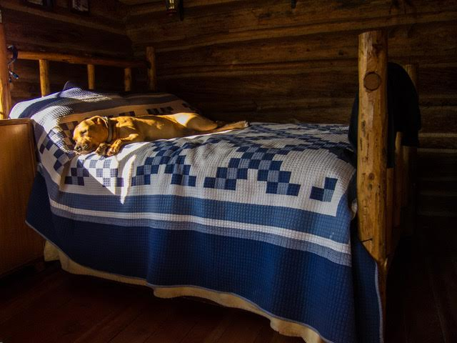

Many people want to share in the important work provided by Therapy Animals of Utah, but may not have the time or ability to volunteer. We invite these individuals to help by making a monetary gift. A gift of any size helps and makes a big difference for TAU.
Utah Pet Partners has canceled Special Therapy Animal Events until further notice because of the Covid-19 coronavirus and special precautions necessary to keep our clients and volunteers safe. Please check our Facebook and Instagram pages often for further developments.
